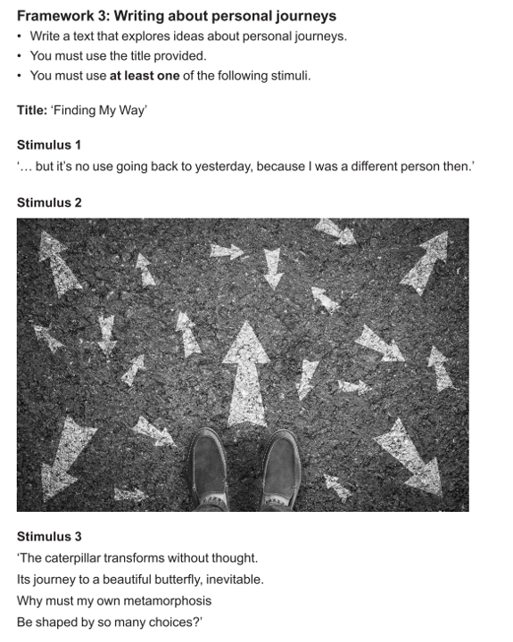

Personal Journeys
On this page
From the Study Design Explorations of ‘life’ or biographical explorations - telling our stories, telling others’ stories, the problem of telling stories, appropriation of stories, who tells the stories and our history, missing stories, marginalised and elevated stories. Students could explore personal milestones, the effects of key events on their lives, or explore these ideas through the eyes of others. Students who have migrated can explore their stories of movement and disruption. They can explore the expectations of change and the language of a new place and culture.

Writing
Writing about personal journeys explores both the physical world and the internal world of oneself and others.
Reading and crafting texts about journeys provide opportunities to consider new places, perspectives, and self-discovery.
Personal journeys involve various experiences, including challenges, growth, and self-discovery.
Writing about personal journeys allows individuals to share unique experiences with others.
REMINDER: You have access to the exam generator and the prompt generator to practice your Section B skills.
Ideas
A personal journey can involve:
Travel to a physical place.
Psychological or emotional growth and change.
A combination of both, where physical travel leads to new insights.
Interior journeys may take a long time to occur due to significant events.
The most important aspect of a personal journey is change – the individual or group is fundamentally altered by it.

Reading the Framework Inferentially
Read the Framework statement for what it implies, not only what it says. It centres on life writing and storytelling: who tells stories, whose stories are marginalised or elevated, how storytelling gives or takes power, milestones within a longer story, movement and disruption, the familiar and the unfamiliar, expectations of change, and learning the language of a new place.
Build a synonym bank for the Framework’s key ideas so no exam title feels unfamiliar. For example: journey (passage, odyssey, path, trajectory, pilgrimage); change (transition, evolution, metamorphosis, upheaval, growth); story (account, testimony, narrative, history, memoir).
Questions worth exploring (from the VATE 2026 Section B lecture):
Why do people feel a need to tell, or uncover, their own story and heritage?
How does an onlooker see someone else’s journey differently from the person living it?
Are key moments milestones, or millstones that weigh a person down?
Is the journeying itself as important as what is achieved or lost?
How do external events open up pathways no one planned?
Guardrails: Personal but Not Private
It is the idea of a personal journey, not your autobiography. A title such as “Finding My Way” is not an invitation to recount your life. It invites ideas about what finding one’s way means.
Appropriate for an adult stranger. Your reader is an assessor you will never meet. Avoid content that is overly traumatic, violent or that you would not share with a person in authority. Assessors also have mandatory reporting obligations.
Relatable, not alienating. The goal is a universal human truth the reader can connect with. Something so unique to you that it fosters no empathy works against you.
Write as a person, not a student. Some of the strongest pieces drop the “Year 12 student” identity and write from a human perspective about feelings any reader recognises.
Take the Reader Somewhere: A to B to C
Your piece must itself be a journey. Plan three points:
A - the starting position or understanding;
B - the complication, tension or turning point;
C - the new position: a realisation the reader reaches with you.
Assessors have criticised “stream of consciousness” pieces that wander without milestones. An A-B-C map prevents that and makes your structure visible.
Binaries for Building a Journey
A journey is easiest to see when it moves between opposites. Choose a pair, then find the context that dramatises it:
familiar → unfamiliar; conformity → individuality
ignorance → knowledge; uncertainty → clarity
chaos → order; tension → resolution; pressure → release
emotion → reason (or the reverse); past → future
tradition → progress; powerlessness → power; oppression → resistance
Concept First, Then Context
Start with the concept, then find a situation that embodies it, then map the purposes. Example: concept familiar to unfamiliar; context seeing a place you have known all your life from a new angle (starting work behind the counter of a shop you have visited for years); purposes express the nerves of the first shift, then explain how seeing the “back room” changed how you see the familiar. Starting from the concept means you never lose the idea under the story.
Connected or Cohesive?
Mid-band pieces are connected: their parts link in sequence like paper dolls holding hands. Top-band pieces are cohesive: like a finished jigsaw, every part interlocks to form one picture. Cohesion comes from a single controlling idea (usually drawn from the title), recurring images or motifs, and an ending that resolves the opening.
Building Voice: A Redrafting Exercise
Voice is the personality and perspective that comes through word choice, syntax, punctuation, imagery and tone. Practise it by redrafting a single sentence about an object.
Draft 1 (description): The shoes had a light brown sole and peach-coloured suede. Mum bought them because other students had them.
Draft 2 (context and feeling): Mum came in the front door, arms laden with shopping. I looked past the paper bags to the one I wanted, but the moment I lifted the lid I knew they were the wrong ones: not the ones my friends wore, not the ones that might have let me belong, just a little. My cheeks prickled with ingratitude.
Draft 3 (control): Now move the parts. What changes if the shoes come last, as suspense? If “laden” replaces “full”? If the sentence about belonging is cut short?
The object has become a symbol of belonging, and the voice now carries the idea. Under timed conditions you cannot redraft every line, which is why this practice belongs in the weeks before.
Engaging with the Title and Stimulus
Use your dictionary in reading time. Not because you do not know the words, but to make sure your definition matches the assessor’s, and to find word forms and senses you had not considered. Read the title and every stimulus literally first, then metaphorically (a mountain: height, struggle, vantage, summit; a window: perspective, clarity, separation, opportunity).
Levels of engagement, from mid-band to top-band:
The title informs the piece and links it to the Framework.
The title and a stimulus are blended to create a new meaning neither had alone.
The title and stimulus develop the piece’s purposes and its insight into people and society.
The title, stimulus, purpose, audience, context and message all interrelate, moving the reader from A to B to C.
Practice Titles
Plan (and then write) responses to these unseen-style titles from the VATE 2026 Personal Journeys lecture. Define the title, read it literally and metaphorically, choose a binary, then map A-B-C.
Finding Joy
Growth
Looking Back, Looking Forwards
I Have Something to Say
Prepare two or three developed ideas before the exam, so on the day you can choose the one that best fits the title.